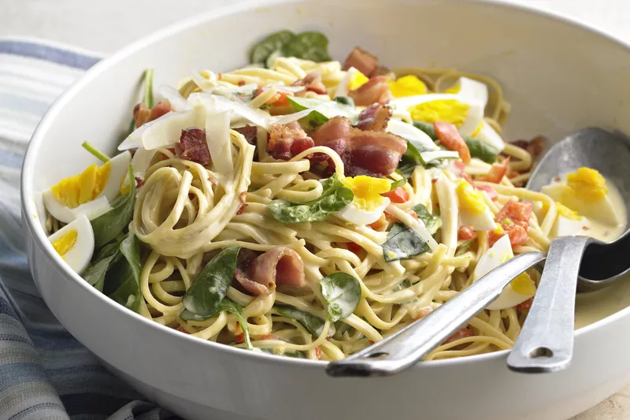

Spiced-up Recipes
Here you will find my favorite recipes that I have been perfectioning for amazing flavor and spicenness
Check them out!
Pasta salad

Today's recipe is a picnic-perfect pasta salad! Every cookout needs a great pasta salad, and this is the one that I’ll be making all summer long. It comes together in no time, it’s full of fresh ingredients, and it packs a flavorful punch.
- Ingredients
-
- Pasta
- Cherry tomatoes
- Onion
- Feta cheese
- Arugula
- Chickpeas
- Olive oil
- Lemon juice
- Basil and parsley
- Steps
-
- Cook your pasta in a large pot of salted boiling water. Drain it, toss it with some olive oil, and set it aside to cool.
- Chop your cherry tomatoes and cucumbers, mince the parsley, and crumble the feta.
- Whisk together the dressing ingredients.
- And toss everything together in a big bowl! Season to taste and dig in.
Go back for more recipes